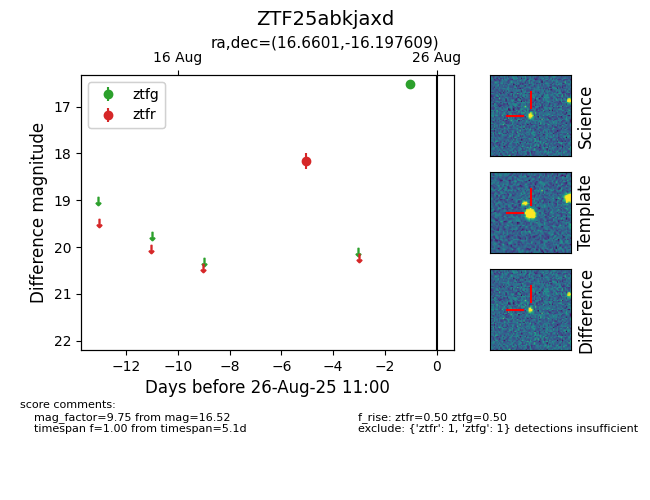

Target ZTF25abkjaxd at 2025-08-26 11:00, see:
FINK: fink-portal.org/ZTF25abkjaxd
Lasair: lasair-ztf.lsst.ac.uk/objects/ZTF25abkjaxd
ALeRCE: alerce.online/object/ZTF25abkjaxd
alt names
ZTF25abkjaxd (ztf,fink)
coordinates:
equatorial (ra, dec) = (16.6601,-16.19761)
galactic (l, b) = (141.5764,-78.51528)
photometry
last ztfg=16.52, ztfr=18.16
1 ztfg, 1 ztfr detections
